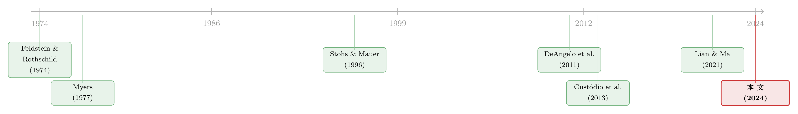

飞机要换，债也要「换」：把「期限匹配」拆回资本的年龄
本文读的是 Geelen, Hajda, Morellec & Winegar (2024, Journal of Financial Economics)：资本会变老、终究要换，于是企业在买入新资本时加杠杆、在资本变老时主动去杠杆，为下一轮「换新」腾出借债空间。这个简单的事实同时生出了两样东西——债务周期与资产-债务的期限匹配。更妙的是，它让一桩争论了二十年的实证公案（期限匹配到底存不存在）一下子有了答案：资本年龄解释时间序列，资产寿命解释横截面。
1 引言：一条人人挂在嘴边、却谁也没测准的「原则」
先讲一个几乎所有公司金融教科书都会写、所有 CFO 都会点头的「常识」：期限匹配原则 (maturity matching principle)——用长期负债去配长期资产，用短期负债去配短期资产。Brealey-Myers-Allen、Ross 等经典教材都把它当作财务管理的基本纪律，理由也很朴素：用滚动的短债去顶一笔长期资产，既要承受短端利率波动的风险，又要反复支付再融资成本，太危险也太贵。Graham and Harvey (2001) 那份著名的 CFO 问卷更是直接：在决定债务期限时，「让债务期限匹配资产期限」被经理人排在第一位。
按理说，一条被实务界奉为圭臬、被教科书写进第一章的原则，实证上应该铁证如山才对。可偏偏不是。
这正是本文的「悬念」：Stohs and Mauer (1996) 用混合回归（pooled，主要靠横截面变异识别系数）发现资产期限与债务期限显著正相关——期限匹配存在。可 Custódio, Ferreira and Laureano (2013) 换成带公司固定效应的面板回归（靠时间序列变异识别），却发现资产期限对债务期限几乎没有影响。同一个原则，两套数据，两个相反的结论。到底谁对？
接着，一个自然的问题是：会不会两边都对，只是它们测的根本不是同一件事？要回答这个问题，本文没有去堆更多的回归，而是退回到一个被大多数动态资本结构模型忽略掉的、近乎「物理」的事实——
资本会老，而且终究要换。
2 一个被「几何折旧」盖住的事实
2011 年，美国航空一口气订了 460 架飞机，去替换它日渐老化的机队。这不是航空业的特例：2019 年，全美上市公司的重置投资 (replacement investment) 加总高达 $1.27tn，相当于它们资本存量的约 21%。大规模、可预见的「换新」，是真实商业世界的常态。
可绝大多数动态投资-融资模型（追溯到 Hayashi, 1982）都假设资本是几何折旧 (geometric depreciation) 的——每期按固定比例缩水，永远用得下去，永远不必「整批报废」。在这种设定下，资本只有「价值」在连续衰减，没有「该退役了」这回事。本文反其道而行，把资本设成有有限使用寿命 (finite useful life)：
用航空业的例子最直观：两家航司各有同样多的飞机，一家的飞机平均更老。如果是几何折旧，更年轻机队的航司应该「更高产」、能飞更多乘客。但现实是两家飞的乘客数量差不多——飞机在退役前，生产能力基本不变，变的只是它的剩余价值与剩余寿命。
这种「生产率恒定、寿命有限、到期整批替换」的折旧方式，有个很形象的名字叫单马拉车式折旧 (one-hoss-shay depreciation)（Arrow, 1964；Rampini, 2019；Livdan and Nezlobin, 2021）。它在实务里其实是主流：企业层面的 PP&E（不动产、厂房与设备）数据，几乎都是在「资本在有限寿命内效率恒定」的假设下编制的。
抓住了这个事实，整篇文章的逻辑链就被点燃了：既然资本会在某个确定的时点整批退役、需要一大笔钱去换，那么今天的融资决策，就必须为那笔未来的「换新」预留空间。
3 模型：把「为未来换新而省」写成一个最优化问题
本文先在最干净的设定里——单一资产、生产率恒定——把机制讲透；后面再加冲击、多资产、其他折旧形式做稳健性。我们一步步走。
设定。 时间离散，\(t\in\{0,1,2,\dots\}\)。一个风险中性的企业家以利率 \(r>0\) 贴现现金流。每期一单位资本生产一单位最终品，下一期带来利润 \(\pi>0\)。新资本即时交付、价格为 \(K\)，不可逆（不能卖出），且有有限寿命：用满 \(n\) 期后必须替换。
为什么要借债？ 关键假设是债权人比企业家更有耐心，以更低的利率 \(\rho_D $$\rho_D=(1-\tau)\,r 这等价于债务有税盾。于是企业天然有加杠杆的动机。同时，现金的回报 \(\rho_C\in(0,\rho_D)\) 严格低于债务利率，所以企业绝不会同时既持现金又欠债——它的全部财务状态可以用一个变量净债务 (net debt) 概括： $$ND_t=D_t-C_t$$ 借多少有上限。 这是本文的第二个要害：借款约束是基于现金流的 (cash flow-based)，而不是基于抵押品的： $$D_t\le \phi\times\pi,\qquad \phi\in[\,\underline{\phi},\,\bar{\phi}\,)$$ 为什么这么设？因为 Lian and Ma (2021) 的证据显示，美国 还有一个让故事成立的不等式： 投资无法被「债务+当期利润」完全覆盖， $$K>\phi\pi+\pi$$ 也就是说，到了换新那一刻，光靠借满和当期利润还不够——企业必须在投资日之前就攒下负的净债务（净现金），才付得起 \(K\)。这就逼出了「提前去杠杆」的需求。 企业的问题。 股东价值是未来股利的现值最大化（股利由预算约束给出、且非负，净债务满足借款约束）： $$E_0=\sup_{\{I_t,\,ND_t\}_{t\in\{0,1,2,\dots\}}}\;\sum_{t\ge 0}\frac{Div_t}{(1+r)^t}\qquad \text{s.t.}\quad ND_t\le \phi\pi$$ 其中每期股利严格按预算约束走： $$Div_t=\pi\,\mathbb{I}_{\{\text{firm produces}\}}-I_t+C_{t-1}(1+\rho_C)-C_t+D_t-D_{t-1}(1+\rho_D)-\epsilon\max\{D_t-D_{t-1},0\}$$ 最后一项里的 \(\epsilon>0\) 是债务发行成本 (debt issuance cost)，按发债额度成比例收取——它先放着，第 5 节才真正登场。 如果企业每期都生产、每 \(n\) 期换一次资本，它的价值就是「永续利润的现值」减去「每隔 \(n\) 期一次的换新成本的现值」。这两股力量恰好可以写成一个漂亮的闭式，也是整个模型最核心的一个等式： 直觉很清楚：资产寿命 \(n\) 越长，换新越稀疏，那笔重置成本的现值越小，企业越值钱。 寿命 \(n\) 这个参数，从一开始就被钉死在价值函数里——它后面会成为「横截面」差异的根源。 现在让 \(a\in\{0,1,\dots,n-1\}\) 表示当前资本的年龄 (capital age)。先看没有发债成本（\(\epsilon=0\)）的基准情形，此时债务期限无关紧要。 第一步（Proposition 1）：企业从不违约，且恰好在资本用满寿命时替换、绝不提前。原因有三——借款约束让管理层没有卷款跑路的动机；时间贴现让它没有提前承担投资成本的动机；投资是正 NPV 的，所以也不会放弃。 第二步，也是真正关键的一步：企业在买入新资本的当下会借到顶，\(ND_0=\phi\pi\)，因为债务便宜（\(\rho_D $$ND_{a+1}\le ND_a$$ 资本一年年变老，净债务一年年走低，直到资本退役、企业再次借满、开启下一个循环——债务周期 (debt cycles) 就这样从「资本会老」这一个事实里长了出来。注意它「最慢速还债」是为了尽量长地享受债务的税盾好处，但又不能慢到危及下一轮换新。于是模型给出第一个时间序列预测： 预测 1（Prediction 1）： 资本年龄与「净债务/盈利」之比负相关。 这里要点出本文相对抵押品约束模型的独门含义。如果换成抵押品约束，资产剩余寿命缩短、抵押价值下降，债务也会机械地随之下降——所以「净债务随资本年龄下降」两类约束都能给出。但现金流约束多给了一条：连 净债务/EBITDA 这个比率也会随资本年龄下降；抵押品约束只能保证净债务（分子）下降，给不出比率下降。后文的实证恰恰发现比率在下降——这是支持「现金流约束」的一处巧证。 模型还能说清「投资块状程度」与「投资回报」的作用。投资成本是 \(K\)、收益体现在 \(\pi\) 上，于是投资回报 (return on investment) 定义为 \(\pi/K\)。Proposition 2 说：当换新成本变大（\(K'>K\)），资本年龄对净债务的影响更剧烈： $$|ND_{t+1}-ND_t|\le|ND'_{t+1}-ND'_t|$$ 直觉是：资本越贵，要为换新攒的财务余量就越多，去杠杆的幅度就得越大、周期就越「深」。\(K\) 越大意味着两件事同时发生——投资越块状 (lumpy)（一次要花更多），且投资回报 \(\pi/K\) 越低。于是有： 预测 3（Prediction 3）： 资本年龄对杠杆的影响，在投资更块状、投资回报更低、或公司更小的时候，更为显著。 到这里只解释了「债的多少（杠杆）」如何随资本年龄起伏，还没碰到「债的期限」。但真正关键的一步在于第 4 节：把发债成本 \(\epsilon>0\) 放回来。 一旦发债是有成本的（Altınkılıç and Hansen, 2000；Yasuda, 2005），企业就不愿意像基准模型那样年年滚动一期债。它的最优做法变成：只在买资本那一刻发一次债，而且—— 于是反转出现了：期限匹配不是一条外生的纪律，而是「为可预见的换新而提前去杠杆」这件事的副产品。 它在一个企业永续存在、且不存在抵押品约束的世界里，照样内生地冒出来。这与 Myers (1977) 的逻辑形成鲜明对照——在 Myers 那里，成长期权多的公司缩短债务期限是为了缓解债务积压 (debt overhang)；而本文把期限选择直接系在在用资产的剩余寿命上，靠的是未来的投资需求，而非过去。它也不同于 Hart and Moore (1994)：那里靠人力资本不可转让导致借款上限随资产现值（机械地随年龄）下降，本文则无须抵押品约束。 由此得到第二个、属于横截面的预测： 预测 2（Prediction 2）： 债务周期的时长，与资产使用寿命正相关；进一步地，资产寿命越长，平均债务期限越长。 现在回到开头那桩公案。模型给出的最漂亮的一句话是：两个变量，活在两个维度。 这一下就把 Stohs-Mauer 与 Custódio 的矛盾解开了：Stohs and Mauer (1996) 用的是混合回归，主要榨取横截面变异，自然测到「资产期限↔债务期限」的正相关；Custódio et al. (2013) 加了公司固定效应、只剩时间序列变异，于是资产期限的效应被吸收殆尽。两边都没错，只是各自照见了机制的一个侧面。 数据。 样本是 1975–2018 年的美国上市公司，主回归样本约 本文图 1 已经把核心相关性画得很直白：在控制公司固定效应后，资本越老，净债务/盈利越低、债务期限越短（上排，对应预测 1）；而资产寿命越长，债务周期越长、平均债务期限越长（下排，对应预测 2）。每个点是 1/20 的样本公司。 把这些图变成回归后，两条主结论是： 第一（时间序列）。 即便在控制了一整套标准的杠杆与期限决定因素之后，资本年龄依然是杠杆和债务期限的显著决定因素。更进一步，照 Frank and Goyal (2009) 的方差分解方法去比各因素的解释力，资本年龄是解释杠杆比率的「头号」因素、是解释债务期限的「次号」因素。而在专门检验机制的分样本里，资本年龄对杠杆和期限的影响，在投资更块状、投资回报更低、公司更小时更强——与预测 3 严丝合缝。 第二（横截面）。 资产期限是债务期限在横截面上的显著决定因素，但在时间序列上不是；与之镜像，资本年龄是债务期限在时间序列上的关键驱动。资产寿命越长的公司，债务周期越长、平均债务期限越高——预测 2 得到支持。 一句话记住这篇文章的实证身份证：横截面看资产寿命，时间序列看资本年龄。谁也别想用一条回归同时把两件事说清楚——这恰恰是过去二十年争论不休的根源。 机制层面，本文还把自己接进了几条既有证据：企业在投资高峰期加杠杆（Denis and McKeon, 2012；Bargeron et al., 2018），随后主动去杠杆（DeAngelo et al., 2018），以及债务周期的形成（DeAngelo, Gonçalves and Stulz, 2018）——都与「为换新而预留借债空间」的故事一致。关于「现金为什么要主动还出去、为未来留出余地」这条线，可对照《一万七千亿美元的「自由现金」，被花到哪里去了？》与《现金为什么一定要「还」出去？——四十年后，重读 Jensen 的自由现金流》里关于财务弹性的讨论。 这条研究的起点，是一个常被金融学忽略、却被宏观与生产率研究反复强调的事实：重置投资本身值得被建模。Feldstein and Rothschild (1974) 很早就指出几何折旧不符合现实、重置投资有它自己的经济学。沿着「资本块状替换」的脉络，Cooper, Haltiwanger and Power (1999)、Doms and Dunne (1998) 在数据里看到了投资的「成块」特征。  到了债务期限这条线，Myers (1977) 奠定了「成长期权→缩短期限以缓解债务积压」的经典逻辑，Hart and Moore (1994) 则从人力资本不可转让出发，让债务价值随资产现值下行。实证上，Stohs and Mauer (1996) 与 Custódio et al. (2013) 各执一词，构成了本文要解的那道题。 与此并行的，是动态资本结构这条主干：Gomes (2001) 把投资与融资同框，Hennessy and Whited (2005) 写下债务动态，DeAngelo, DeAngelo and Whited (2011) 给出「投资尖峰伴随杠杆尖峰、随后渐进去杠杆」的图景。借款约束的「类型之争」上，Rampini and Viswanathan (2010, 2013) 主张抵押品约束，而 Lian and Ma (2021)、Block et al. (2023) 的证据把天平压向了现金流约束。本文（2024）站在这三条线的交汇处：它把「资本有限寿命」这块被忽略的拼图，嵌进现金流约束的动态模型里，让债务周期与期限匹配同时内生地涌现，并据此为期限匹配的实证公案给出了一个统一的解释。 Q：模型里资本生产率恒定，可现实中老飞机维护成本更高、利用率更低，这会推翻结论吗？ 不会，反而会强化。作者明确指出（脚注），若利润随资本年龄下降（如 Benmelech and Bergman, 2011 的低利用率或更高维护成本），结果只会机械地更强——因为「为换新腾空间」的压力来得更早更猛。恒定生产率是一个保守的、便于求解的设定。 Q：现金流约束和抵押品约束，到底哪个才是真的？这对结论关键吗？ 对「净债务随资本年龄下降」这条，两类约束都能给出，所以结论是稳健的。但二者有一处可证伪的分叉：只有现金流约束才预测连「净债务/EBITDA」这个比率也随资本年龄下降；抵押品约束只让分子下降。实证发现比率确实在降，所以数据偏向现金流约束（这与 Lian and Ma, 2021 的 80% 一致）。 Q：「资本年龄」根本观测不到，用折旧率反推，会不会只是在度量折旧本身？ 这是最该担心的地方。作者用了至少五种资本年龄口径（BEA 折旧率、Compustat 折旧率、剔除摊销、Ai et al. 2012 式的加权账龄等），结论一致；但本质上资本年龄仍是个构造变量，它与盈利能力、投资节奏天然纠缠，所谓「显著决定」更接近稳健的相关性，而非干净的因果。 Q：为什么是「期限匹配」而不是「年年滚动短债」？短债不是更灵活吗？ 因为发债有成本（\(\epsilon>0\)）。年年滚动一期债意味着年年付发行费，太贵；一次性发一笔「期限=资产寿命、且偿还表逐期释放借债空间」的债，既省了反复发行的成本，又精准地在换新那一刻备好了财务余量。期限匹配是省成本的最优解，不是纪律。 Q：这套理论对「外资持有人」或「公司债流动性」有什么含义吗？ 模型本身是封闭企业视角，没有市场微观结构。但它的一个外推很自然：如果企业的债务期限是被「在用资产的剩余寿命」内生决定的，那么一个行业的资产寿命分布，就应该映射到它发行债券的期限结构与到期墙 (maturity wall) 上——这对持有这些债的投资者（包括外资）的再投资风险与流动性需求是有含义的。 Q：它和「投资尖峰处加杠杆」的已有证据是重复，还是新东西？ 不重复。Denis-McKeon、DeAngelo 等记录了「加杠杆—去杠杆」的事实，但没把它系到资本年龄与资产寿命这两个可观测维度，更没区分时间序列与横截面。本文的增量正是把这套动态锚定到这两个变量上，并据此调和了期限匹配的实证争论。 1. 资产寿命分布 → 公司债到期墙 → 二级市场流动性 【经济故事】若债务期限内生于资产寿命，那么资产寿命长（短）的行业，其债券到期日的「成块」程度应当不同，进而影响到期再融资时点的卖压与做市需求。
【可行性】中。需要 Mergent FISD（债券发行与到期）+ Compustat（资产寿命代理）+ TRACE（成交与流动性）。识别上可用行业资产寿命作为准外生的截面变异，但内生性（评级、规模）需小心处理。 2. 外资持有人与「期限匹配」的偏离 【经济故事】当一国企业越来越多地向外资发债，发行币种、期限会受国际需求牵引（参见关于销售版图决定借债币种的研究）。外资需求是否会把债务期限推离其资产寿命所「应有」的水平？偏离越大，再融资风险是否越高？
【可行性】中。需跨国债券层面的持有人数据（如 Morningstar/EPFR 或央行持有人统计）。识别难点在于外资需求与企业基本面同时被宏观因素驱动，宜找供给侧冲击做工具。 3. 现金流约束 vs 抵押品约束的「比率检验」推广 【经济故事】本文用「净债务/EBITDA 是否随资本年龄下降」区分两类约束。能否把这条检验做成一个更一般的、可移植到其他场景（如 LBO、私募信贷）的判别工具？
【可行性】高。Compustat 即可起步，私募信贷部分可借 Block et al. (2023) 式的基金层面数据；纯实证、无需结构估计，门槛低。 4. 块状投资—债务周期与货币政策传导 【经济故事】Proposition 2 说投资越块状、周期越深。那么在加息周期里，资产寿命长、投资块状的行业，其杠杆与期限的反应是否系统性地不同？这给货币政策的「期限错配渠道」提供了一个横截面预测。
【可行性】中。需把行业资产寿命与企业债务期限、利率冲击拼起来；识别可用高频货币政策冲击 + 行业资产寿命交互项。 5. 把模型结构估计出来，反推「隐含资产寿命」 【经济故事】既然债务期限内生于 \(n\)，理论上可以反过来——用观测到的债务周期长度去结构性地估计企业的隐含资产寿命，再与会计折旧口径对照，看二者偏离能否预测未来的投资尖峰。
【可行性】低-中。需要把本文的离散动态模型做 SMM/最大似然估计，计算量与识别假设都不轻，但理论框架已经现成。 这篇文章的贡献，在我看来不在于它的实证「显著」，而在于它把一个被几何折旧悄悄抹掉的物理事实——资本会老、要整批换——重新请回了动态资本结构的舞台中央，并且只用这一个事实，就同时生出了债务周期与期限匹配两样东西。尤其漂亮的是它对那桩二十年公案的处理：不是再加一组回归去站队，而是用模型告诉你「资本年龄管时间序列、资产寿命管横截面」，于是两个对立的实证发现各归其位。这种「用理论给实证分歧定坐标」的做法，是它最有说服力的地方。 我对识别的担心集中在两点。其一，资本年龄是个被构造出来的变量，深度依赖折旧率口径，且与盈利、投资节奏、公司生命周期高度共线，所谓「头号解释力」更接近稳健相关而非因果——文章也确实没有一个外生冲击来撬动资本年龄。其二，资产期限作为「使用寿命」的代理，本身就由账面资产结构算出，它与债务期限在横截面的正相关，难免有「同一套会计分类两头算」的成分；若能找到一个与融资无关、纯技术性的资产寿命外生变异（比如监管规定的强制退役年限、技术标准更替），这套横截面识别会更让人信服。 后续我最想看到的，是把这套「资产寿命→债务期限」的内生机制，接到债券二级市场上去：如果期限真是被资产寿命内生决定的，那它在到期墙、再融资风险、乃至持有人结构（包括外资）上的指纹，应该是可观测、可检验的。那会让这篇偏理论的文章，真正落到信用市场的流动性研究里来。 Altınkılıç, Oya, and Robert Hansen (2000). Are there economies of scale in underwriting fees? Evidence of rising external financing costs. Review of Financial Studies 13, 191–218. Arrow, Kenneth (1964). Optimal capital policy, the cost of capital, and myopic decision rules. Annals of the Institute of Statistical Mathematics 16, 21–30. Bargeron, Leonce, David Denis, and Kenneth Lehn (2018). Financing investment spikes in the years surrounding World War I. Journal of Financial Economics 130, 215–236. Benmelech, Efraim, and Nittai Bergman (2011). Vintage capital and creditor protection. Journal of Financial Economics 99, 308–332. Block, Joern, Young Soo Jang, Steven N. Kaplan, and Anna Schulze (2023). A survey of private debt funds. Working Paper, University of Chicago. Cooper, Russell, John Haltiwanger, and Laura Power (1999). Machine replacement and the business cycle: lumps and bumps. American Economic Review 89, 921–946. Custódio, Cláudia, Miguel A. Ferreira, and Luís Laureano (2013). Why are US firms using more short-term debt? Journal of Financial Economics 108, 182–212. DeAngelo, Harry, Linda DeAngelo, and Toni M. Whited (2011). Capital structure dynamics and transitory debt. Journal of Financial Economics 99, 235–261. DeAngelo, Harry, Andrei Gonçalves, and René Stulz (2018). Corporate deleveraging and financial flexibility. Review of Financial Studies 31, 3122–3174. Denis, David, and Stephen McKeon (2012). Debt financing and financial flexibility: evidence from proactive leverage increases. Review of Financial Studies 25, 1897–1929. Feldstein, Martin, and Michael Rothschild (1974). Towards an economic theory of replacement investment. Econometrica 42, 393–424. Frank, Murray, and Vidhan Goyal (2009). Capital structure decisions: which factors are reliably important? Financial Management 38, 1–37. Geelen, Thomas, Jakub Hajda, Erwan Morellec, and Adam Winegar (2024). Asset life, leverage, and debt maturity matching. Journal of Financial Economics 154, 103796. Gomes, Joao (2001). Financing investment. American Economic Review 91, 1263–1285. Graham, John, and Campbell Harvey (2001). The theory and practice of corporate finance: evidence from the field. Journal of Financial Economics 60, 187–243. Graham, John R. (2022). Presidential address: corporate finance and reality. Journal of Finance 77, 1975–2049. Hart, Oliver, and John Moore (1994). A theory of debt based on the inalienability of human capital. Quarterly Journal of Economics 109, 841–879. Hayashi, Fumio (1982). Tobin's marginal q and average q: a neoclassical interpretation. Econometrica 50, 213–224. Hennessy, Christopher, and Toni Whited (2005). Debt dynamics. Journal of Finance 60, 1129–1165. Lian, Chen, and Yueran Ma (2021). Anatomy of corporate borrowing constraints. Quarterly Journal of Economics 136, 229–291. Myers, Stewart (1977). Determinants of corporate borrowing. Journal of Financial Economics 5, 147–175. Rampini, Adriano, and S. Viswanathan (2010). Collateral, risk management, and the distribution of debt capacity. Journal of Finance 65, 2293–2322. Stohs, Mark Hoven, and David Mauer (1996). The determinants of corporate debt maturity structure. Journal of Business 69, 279–312.80% 的债务合约挂的是现金流约束（看 debt/EBITDA 这类指标），而非抵押品约束。Graham (2022) 的 CEO 调研也印证：debt/EBITDA 是企业衡量负债最常用的标尺。这个约束选择，后面会带来一个抵押品约束给不出的、独特的可检验含义。3.1 先看「永续经营」的价值长什么样
3.2 关键定理：资本越老，净债务越低
3.3 投资越「块状」，周期越剧烈
4 从债务周期，到期限匹配
5 识别策略与数据：把「时间序列」和「横截面」掰开
68,833 个公司-年观测。资本年龄无法直接观测，作者用折旧率反推「资本的平均账龄」（基准用 BEA 行业折旧率，并以 Compustat 折旧率等多种口径做稳健性，各口径下资本年龄均值约 5.5–5.8 年）。资产期限（asset maturity，作为使用寿命的代理）样本均值约 10.15 年、中位数约 8.42 年；公司年龄均值约 19.2 年。变量在 1% 与 99% 处缩尾。6 主要结果：资本年龄，是债务期限在时间序列里的「主语」
7 文献脉络
8 评论与延伸（Q&A + 研究方向）
(a) 几个可能的疑问
(b) 几个可能的研究问题与提案
9 我的判断
参考文献